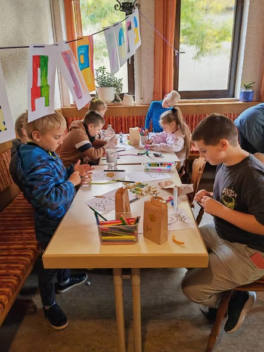
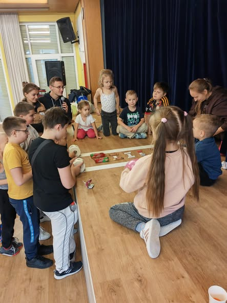
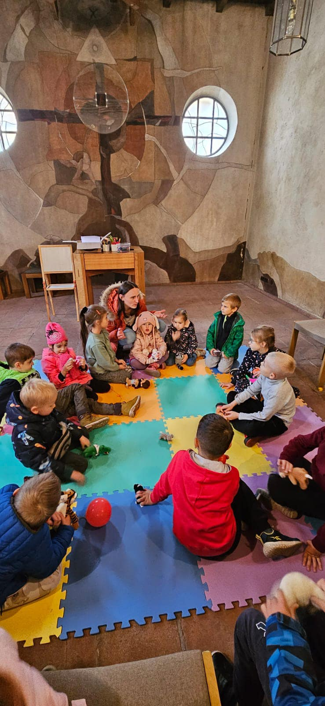
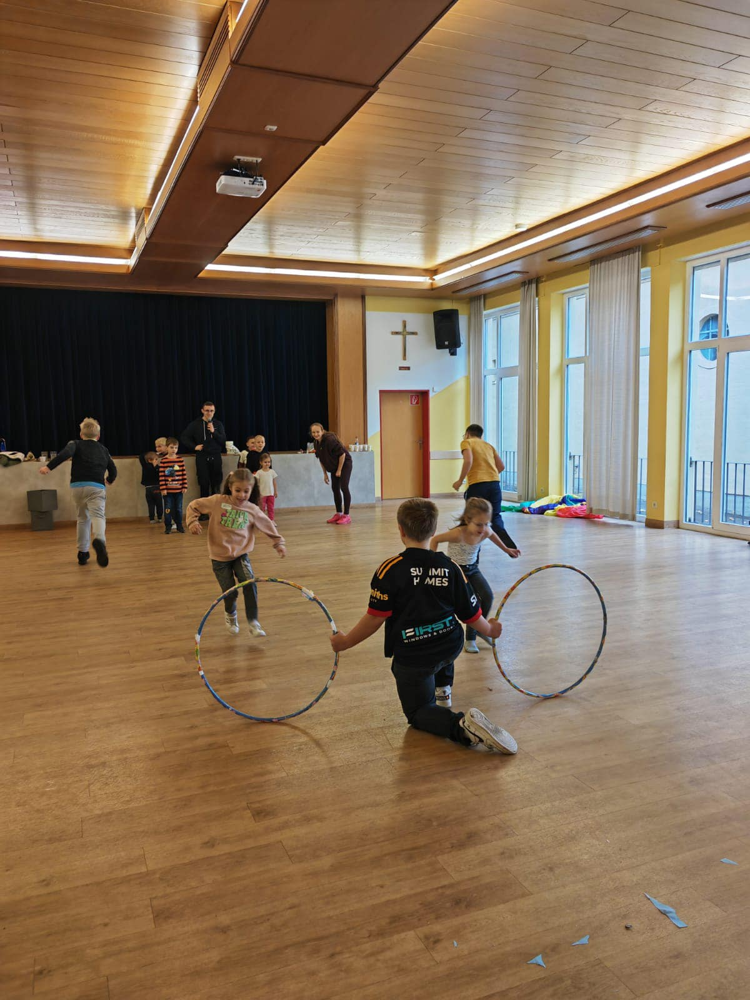
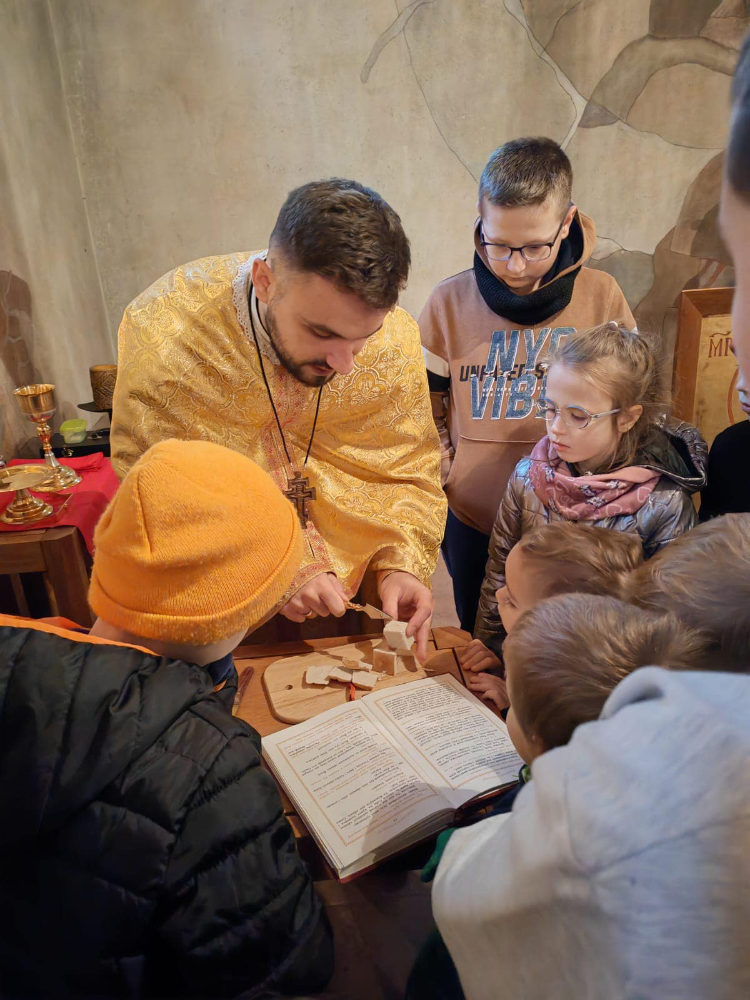

8 лютого 2026
Храмове свято та візит Владики
З нагоди 80-ліття парафії запрошуємо на Архієрейську Літургію за участі Владики Богдана Дзюраха.
Офіційний сайт Української Греко-Католицької Церкви
в місті Аугсбург
Кожна 1-ша та 3-тя неділя місяця — СУМ при парафії
Розклад Богослужінь на великі свята (зокрема Пасхальні) буде оновлено найближчим часом після узгодження.
З нагоди 80-ліття парафії запрошуємо на Архієрейську Літургію за участі Владики Богдана Дзюраха.
Цей сайт був створений учасником молодіжної спільноти як подарунок для всієї нашої парафії.

Бажаємо щоб світло Христове світило і зігрівало усіх, особливо там де зараз найхолодніше і найтемніше!

Зустрічі молоді, спільні молитви, поїздки, підготовка до свят та цікаве спілкування.

Підготовка дітей до Першої Сповіді та Урочистого Причастя, вивчення основ віри.
Наша співоча родина, яка супроводжує Богослужіння та бере участь у фестивалях.

Допомога Україні, підтримка ЗСУ та дітей, збір гуманітарної допомоги.

Дорогі парафіяни та гості!
8 лютого наша громада урочисто відзначила визначну дату — 80-річчя заснування парафії бл. свщмч. Петра Вергуна. Щиро дякуємо усім, хто розділив з нами радість молитви в цей історичний день.
Урочиста Архієрейська Божественна Літургія стала центром нашого ювілею.
Богослужіння очолили почесні гості:
2 лютого 2026
Христос посеред нас! І є, і буде!
Сьогодні ми святкуємо Стрітення Господа нашого Ісуса Христа. Це свято зустрічі людини з Богом, Старого Завіту з Новим. У цей день Пречиста Діва Марія та Йосиф принесли маленького Ісуса до Єрусалимського храму, де їх зустрів праведний старець Симеон.
Бажаємо, щоб світло Христове світило і зігрівало усіх, особливо там, де зараз найхолодніше і найтемніше!
За традицією, у цей день в церкві освячують свічки — "громиці". Нехай ця освячена свічка стане символом світла нашої віри, яке розганяє темряву гріха та зневіри.
Наша молодіжна спільнота в Аугсбурзі — це місце, де молодь зростає у вірі, дружбі та взаємній підтримці. Тут ми не лише молимося разом, а й активно беремо участь у житті громади, організовуємо події та створюємо теплу, родинну атмосферу.
За час нашої діяльності ми вже підготували та провели свято Святого Миколая, вертеп, ярмарок до 80-річчя церкви та багато інших заходів. Попереду — ще більше цікавих проєктів, свят і добрих справ.
Ми також любимо подорожувати та відвідувати святі й духовно важливі місця. Вже побували в Парижі, а зараз плануємо паломництво до Меджугор’я.
Наші зустрічі проходять кожного четверга о 17:00
Адреса: Volkhartstraße 2, 86152 Augsburg, 3 поверх
З усіх питань щодо молодіжної спільноти звертайтеся за телефонами або в WhatsApp:
Катехизація — це важливий етап у духовному зростанні кожної дитини. При нашій парафії діє школа, де діти дізнаються про Бога, Церкву та Святе Письмо.
Заняття проходять щонеділі о 12:25 (після Божественної Літургії).
Запрошуємо батьків записувати своїх дітей.
За детальнішою інформацію пишіть на нашу електронну пошту, яку ви знайдете в розділі "Контакти".






Волонтерство — це наш діяльний вияв любові до ближнього та підтримки нашої Батьківщини. Наша громада активно згуртувалася для допомоги тим, хто цього потребує найбільше.
Якщо ви хочете долучитися до волонтерів або маєте пропозиції, напишіть нам на електронну пошту, яку ви знайдете в розділі "Контакти".